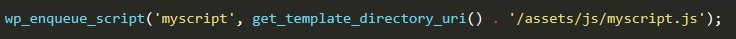

Темы для WordPress хранятся в папке: wordpress / wp-content / themes
Для добавления свой темы, в папке 'themes' создаем папку и называем ее именем своей темы, например 'mytheme'.
Теперь для того что бы WP принял нашу папку как тему, необходимо в нее добавить два файла:
В файле CSS надо вписать комментарий:
Т.е. просто указываем имянашей темы
Теперь, для того что бы появился скриншот нашей темы, надо в папку с темой поместить скриншот (файл должен иметь имя screenshot.png и иметь размер 1200x900)
Вообще писать тему с нуля - это очень трудоемкий процесс. Проще можно скачать шаблон темы и править его под себя. На сайте underscores.me мы можем ввести имя нашей будущей темы, нажать generate и получить архив с файлами нащей будущей темы.
Первое что нам надо создать это файлик с именем 404.php. Что это за файл? Этот станичка с кодом, которая будет отображаться на экране в случае отсутствия запрашиваемой страницы. К примеру, сейчас мы заходим на наш сайт и у нас загружается файл index.php. Если в адресной строке, мы введем адрес http://localhost/maksim то WP откроет нам страницу index.html. Так устроен WP, что если он не находит страницу (а страницы maksim.html нет, мы ее не создавали), то система получит ошибку 404 после которой идет перенаправление на index.html. Для этого случая и делается страница 404.php. Внутри этой страницы следует сверстать какое нибудь сообщение о том, что страница не найдена
Предположим, что у нас есть верстка и нам надо эту верстку перенести в нашу тему WP. По идее мы можем скопировать содержимое нашего файла index.html в файл index.php. Отображение содержимого сайта будет ужасным, т.к. index.php не видит подключенных стилей и скриптов. Более того, копировать весь файл в index.php вкорне не верно. В WP страница всегда разбира на сотавляющие. Какие именно? Минимум их может быть три:
Подключение этих составляющих страницы происходит с помощью функций php:
Т.е. наш файл index.php должен будет содержать в начале и в конце документа такие строки:
Теперь нам в папке с нашей темой надо создать два файла с именами:
Какой код мы помещаем в файл header? Очень просто весь код который помещался от начала документа и до тега <header></header>
Здесь аналогично, в файл footer.php помещаем тот код который заключали от тега <footer></footer> и до конца документа.
Все что осталось от файла index.html помещается в файл index.php между двумя функциями, о которых говорилось выше.
В папке с темой создаем папку assets Затем в эту папку помещаем наши файлы со стилями, сриптами и с картинками (желательно папки называть так: css, js, images)
Далее в header или в footer мы ищем код в котором есть строка подключения стилей или скриптов и в атрибуте src или href используем функцию php
Например наша ссылка до стиля CSS теперь будет выглядеть так:
Т.е. эта функция php возвращает значение пути до нашей папки assets. Важно подметить то, что в функции php использование метода echo обязательно. После строчки кода php мы указываем путь до файла CSS. С файлами скриптов все аналогично.
Вообще подключение стилей в WP абсолютным путем считается плохим тоном и вообще этот способ является не актуальным. Лучше всего для этогоиспользвать файл functions.php.
Что это за файл такой и для чего он нужен. Файл function.php это файл БАТЯ всего сайта, в нем будут храниться основные функции, которые будут строить наш сайт. Но перед тем как начать работать с этим файлом надо разобраться что такое ХУКИ. А пока просто содадим в папке с нашей темой файл function.php и отложим его на время.
Хуки - это крючки собитий к которым можноо подцепить наши функции. Предположим, что наш сайт згаружается поэтапно, сначала загружается header, затем грузится content и наконец загружается footer. Так вот хуки пзволяют подцепиться к одному из этих этапов и во время этого этапа выполнить свое действие.
wp_enqueue_scripts - это хук-событие которое срабатывает в момент подключения в очередь на вывод файлов стилей и скриптов. Как с этим работать? Возвращаемся к нашему файлу function.php и добавляем в него такой текст:
Разберем синтаксис
Но что бы хук-событие обработало в теле нашего документа header.php должно быть событие wp_head. Открываем файл header.php, ищем место где закрывается тег head и перед ним вставляем код:
Теперь займемся функцией style_theme. Кстати имя функции произвольное, мы можем назвать ее как хотим. В этой функции мы и будем писать код, который сможет подключать наши стили.
В нашу функцию style_theme добавляем следующий код:
В нашу функцию style_theme добавляем строку
Скрипты лучше всего подключать в подвале сайта. Для этого открываем файл footer.php и первое что мы делаем, это добавляем событие wp_footer пере закрывающим тегом body.
Затем открываем файл function.php и добавляем туда новый action (действие).
Далее создаем функцию scripts_theme
Допустим нам надо подключить файл myscript.js который находится в папке assets/js/myscript.js. Добавление будет выглядеть так:
ВАЖНО! Много времени потратил на поиск ошибки, почему у меня не подключались скрипты, оказалось, что я не правильно написал wp_enqueue_script, я написал wp_enqueue_scripts - с s на конце, ЭТО ВАЖНО
ВАЖНО!!! имя фала functions.php - s на конце 20 минут не понимал что не работает